Four candidate diversions — reference sheet
Real images for #358, #349, #351 and #372, pulled from Wikimedia Commons on 2026-09-17. Every image is public domain or CC-licensed with its author and licence recorded; click any image for its source page. Notes say what each one is evidence for — they are not decoration. Every file here is a copy downscaled to 900 px on its long edge for the repo; the source page linked from each image is the authoritative original.
#358 Lichen
colonies spreading over stone across decades
Mechanism in the issue: Colony = centre + radial profile r(θ) growing at a species rate with noisy lobing; where two fronts meet the older wins or a dark margin forms.
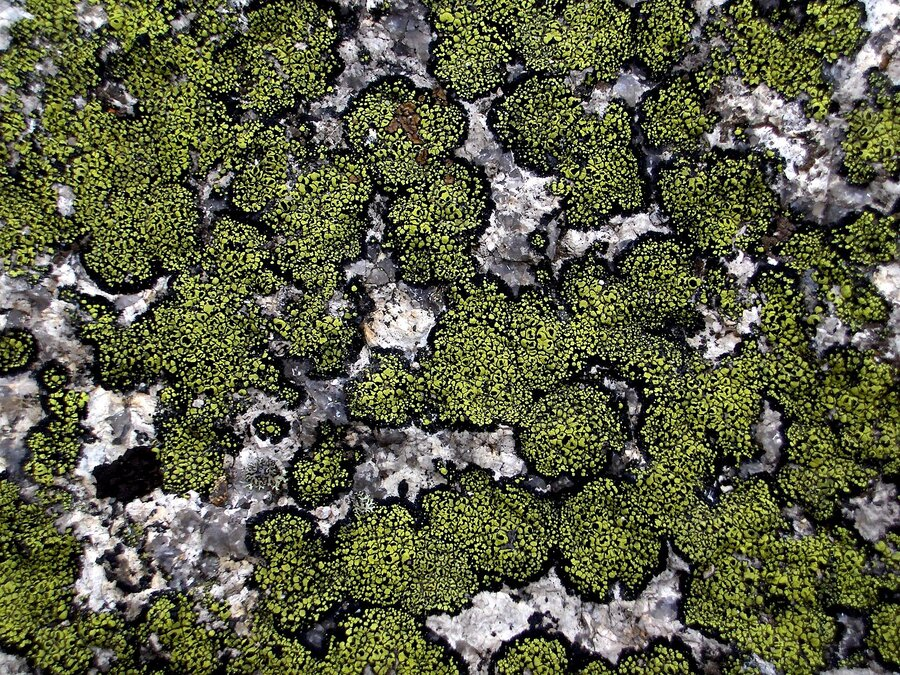
Dense map-lichen mosaic: yellow-green areolate patches meeting pale crusts, black margins where two fronts touch. The competition rule, photographed.
Map lichen.jpg
CC BY 2.0 · Vik Nanda
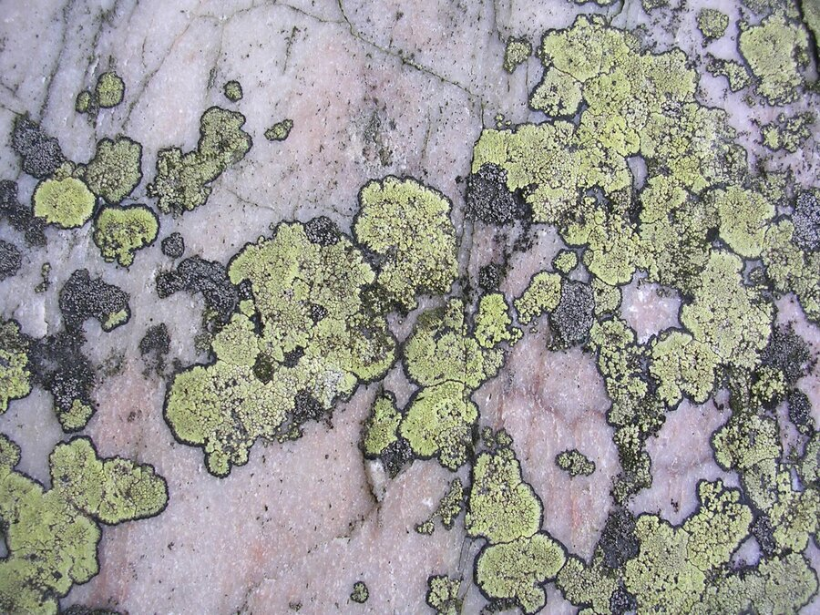
Separate colonies on pink quartzite — each a lobed radial disc with a distinct margin. Closest to 'centre + radial profile r(theta)'.
Mapovník zeměpisný, Bílá skála.jpg
CC BY-SA 3.0 · cs:ŠJů
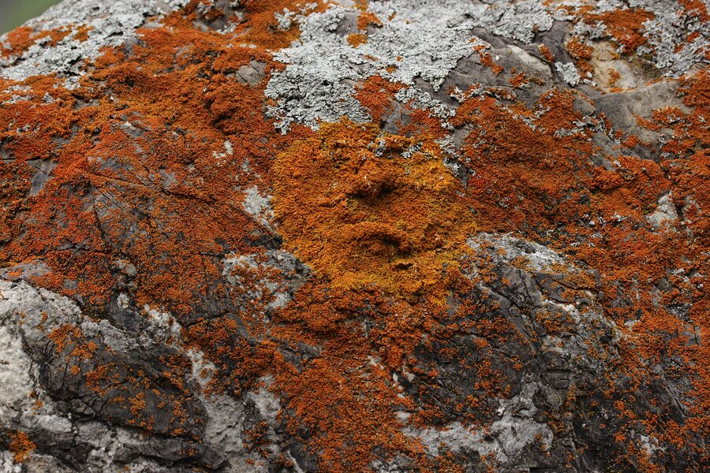
Rust-orange Rusavskia over grey rock beside grey-white crusts: the species-mix palette.
Elegant Sunburst Lichen - Rusavskia elegans (29407039107).jpg
CC BY-SA 2.0 · Björn S...
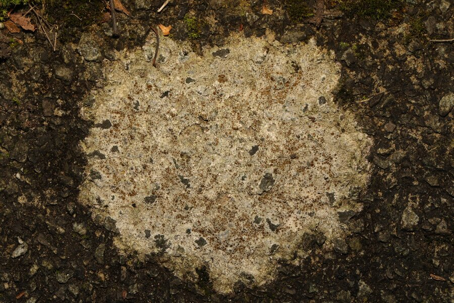
One pale disc on dark stone — a single colony in isolation, diffuse growing edge.
Lecanora campestris 179167238.jpg
CC0 · Stephen James McWilliam
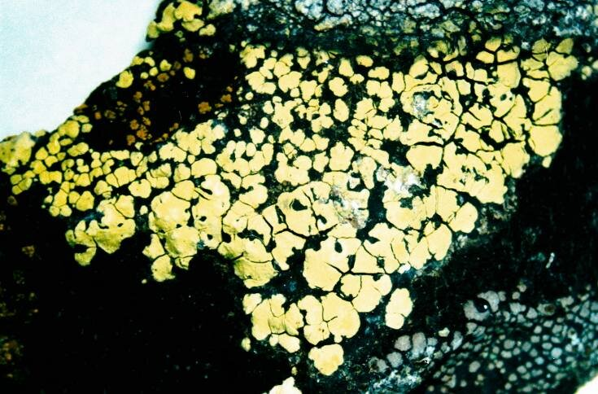
High-contrast yellow areoles on near-black rock; the saturated end of the palette.
Rhizocarpon geographicum-1.jpg
CC BY-SA 3.0 · Ed Uebel
#349 Kolam
one continuous line drawn around a dot grid, then washed away
Mechanism in the issue: A dot lattice, then a single closed curve threaded between the dots on a fixed set of arc tiles; several loops merged into one Eulerian circuit, traced at pen speed.
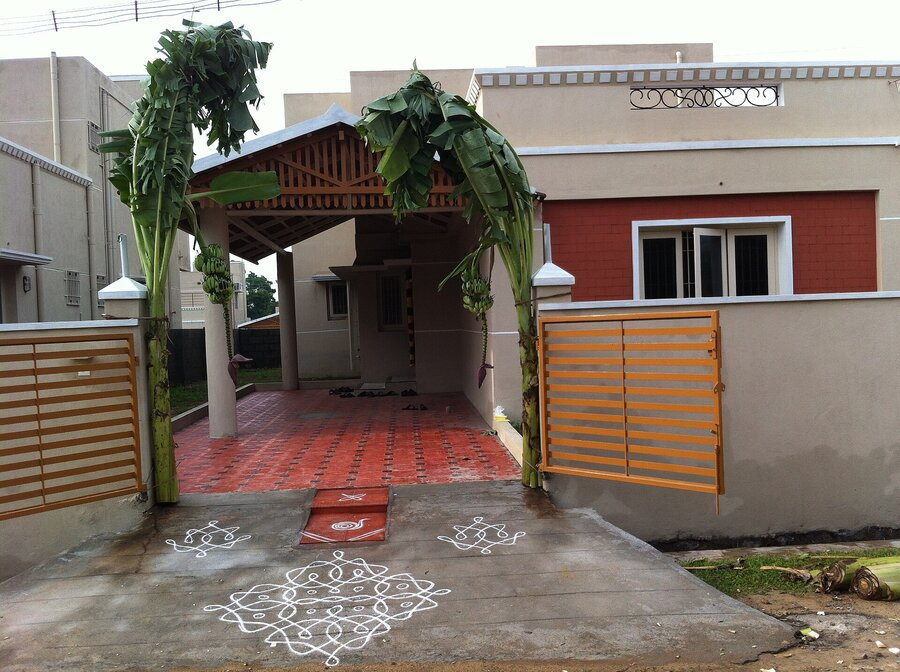
A large sikku kolam: the looping line woven around the dot field, colour filled in after. The target structure.
SikkuKolam.JPG
CC BY-SA 3.0 · Arulraja
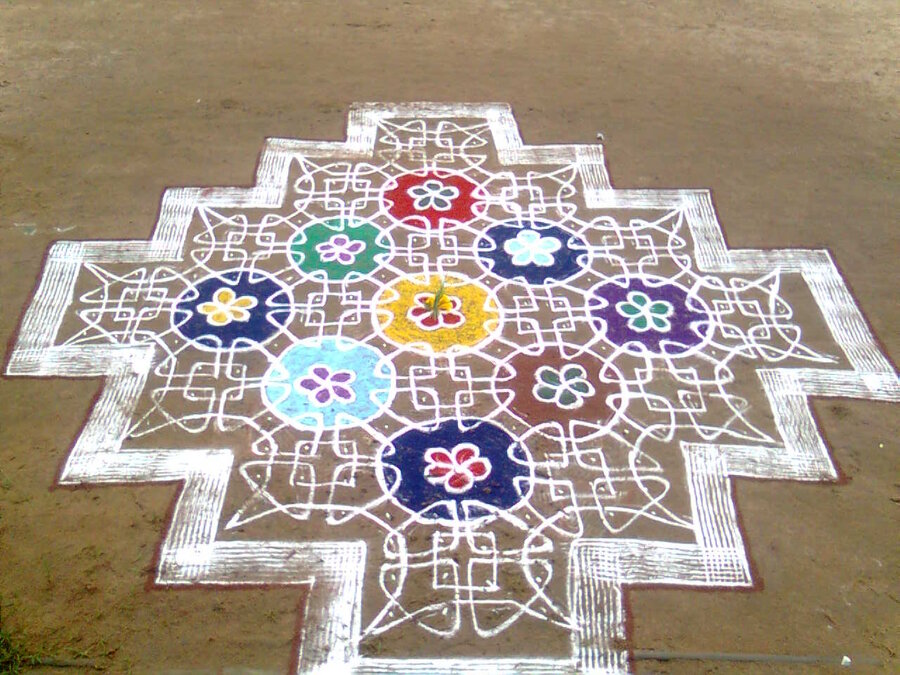
Sikku kolam at a house threshold — the everyday scale and placement.
SIKKU KOLAM.jpg
CC BY-SA 3.0 · Cheran
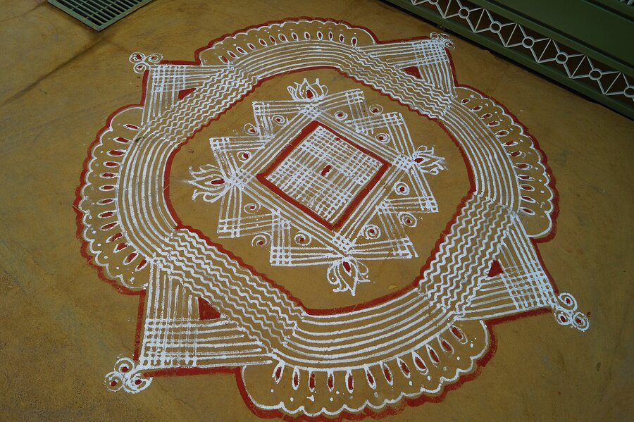
Rice-flour white on ochre ground with a red border; shows the multi-pass stroke texture.
Traditional rice flour kolam.jpg
CC BY-SA 4.0 · SKsiddhartthan
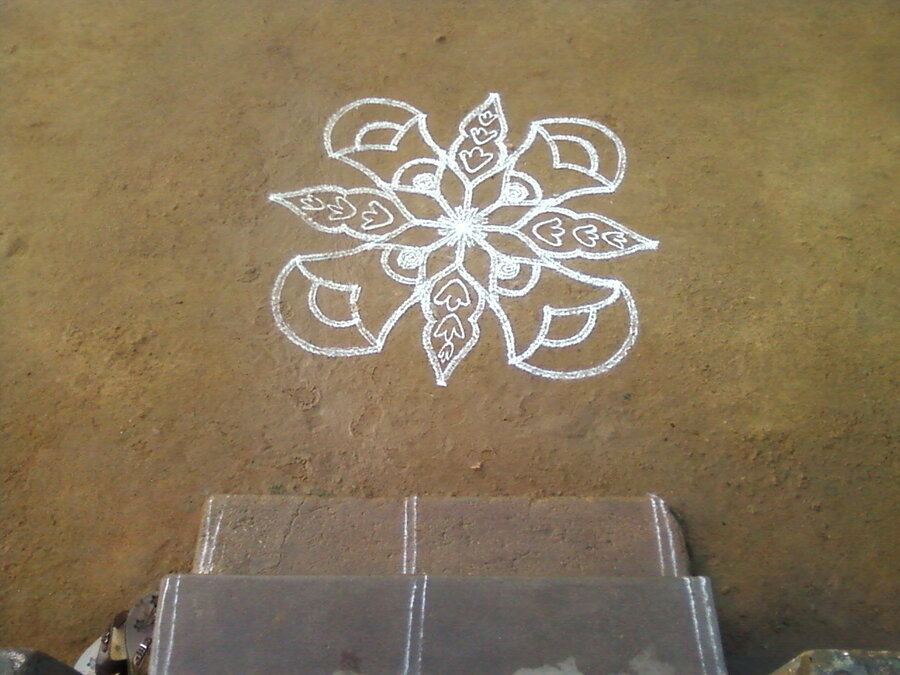
Pulli kolam: petal loops drawn around an implied dot grid, single-line freehand.
Pulli Kolam.jpg
CC BY-SA 3.0 · Ramdhaya
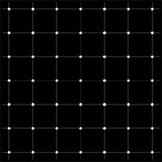
Square dot lattice (pulli) — the substrate before any line is drawn.
Pulli sq.jpg
Public domain · Mayooranathan at Tamil Wikipedia
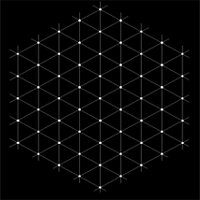
Hexagonal/triangular dot lattice with connectors — the other grid the issue names.
Kolam-Pulli oodu-Tamil-culture.jpg
Public domain · Mayooranathan
#351 Asemic Script
an unseen pen writes flowing meaningless calligraphy
Mechanism in the issue: Glyphs are short chains of stroke primitives over a per-page invented alphabet; a pen model varies width with speed. Page fills, page turns.
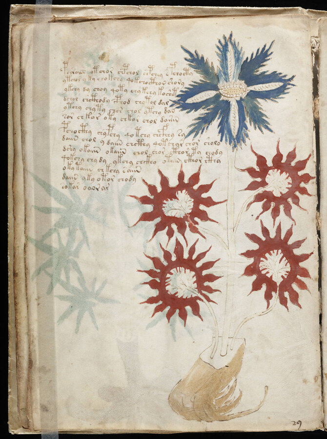
Unknown script on cream vellum: ascenders, flourishes, consistent invented alphabet. The single closest reference to the brief.
Voynich Manuscript (32).jpg
Public domain · Unknown authorUnknown author
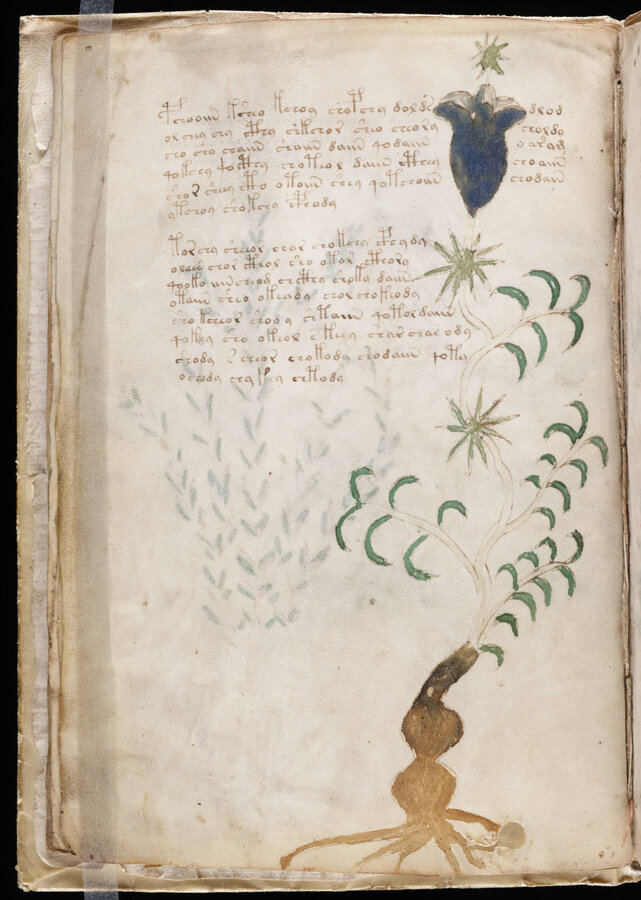
A denser block of the same script — line rhythm and word spacing without a plant dominating.
Voynich Manuscript (10).jpg
Public domain · Unknown authorUnknown author
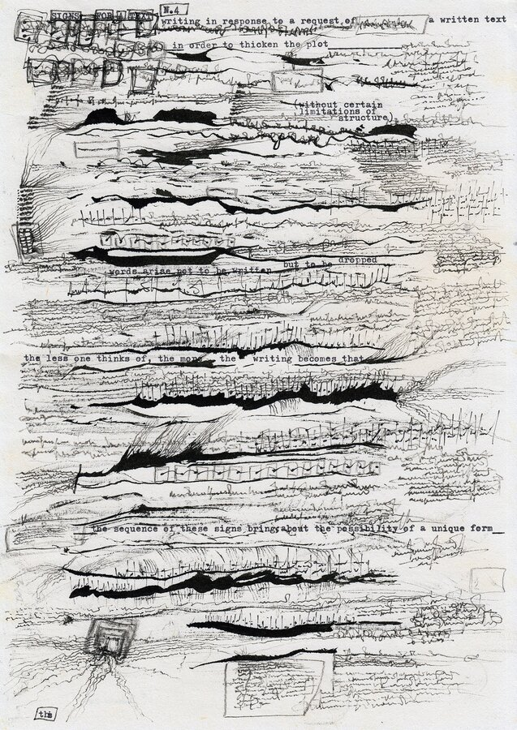
Ruled rows of illegible marks filling a whole page top to bottom: the page-fill rhythm.
Federici 05 - writing in response to.jpg
CC BY 4.0 · Federico Federici
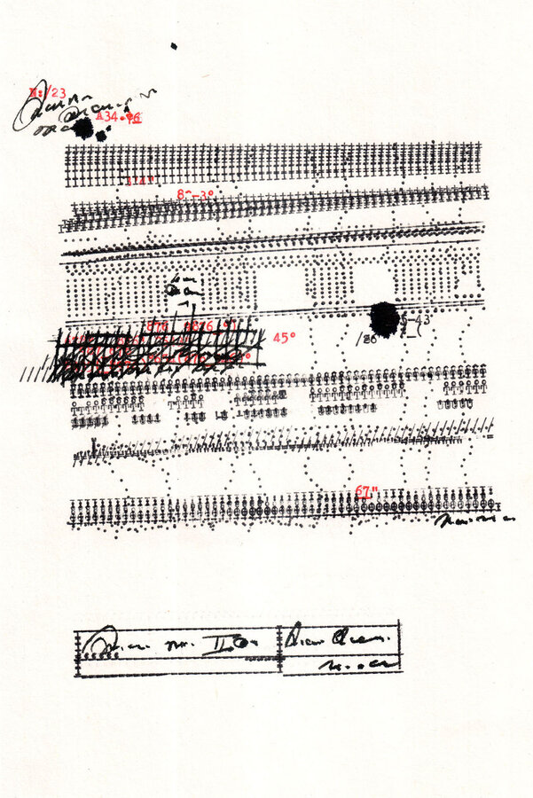
Dense horizontal bands with red annotation and a signature block — margin-note texture.
Concrete Asemic Federici.jpg
CC BY-SA 4.0 · Federico Federici
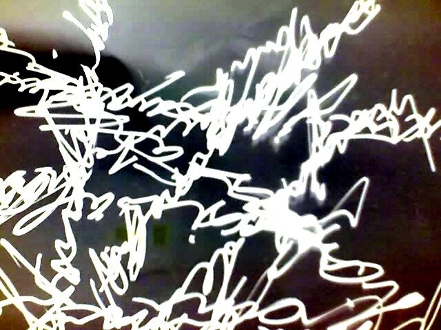
The gestural end of the range: Twombly-ish white scrawl, no baseline discipline.
Asemic3.jpg
CC BY-SA 3.0 · Marco Giovenale
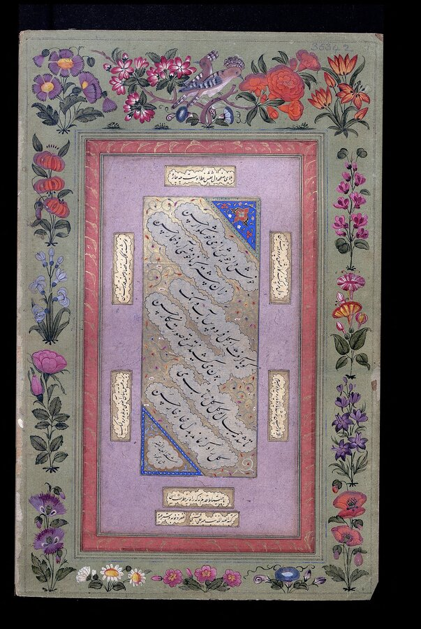
PEN MODEL ONLY, not letterforms to copy: nastaliq is the canonical thick-and-thin stroke modulation the brief asks for.
Nastaliq Calligraphy Album (MS 35342) p. 01, signed Shah Mahmud Nishapuri.jpg
Public domain · Shah Mahmud Nishapuri / Mir Ali Heravi
#372 Girih
Persian strapwork stars laid tile by tile, then drawn stroke by stroke
Mechanism in the issue: Girih tiling by subdivision, then Hankin/Kaplan inference: two strapwork rays leave every edge midpoint at a fixed contact angle and extend until they meet.
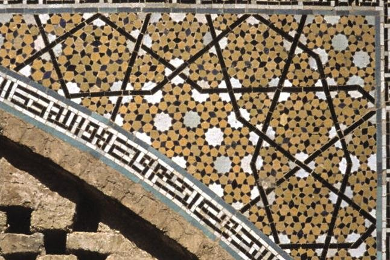
The Lu & Steinhardt subject: bold strapwork at one scale over a finer girih pattern at another. The two-scale self-similarity, in one photo.
Darb-i Imam shrine spandrel.JPG
Public domain · Unknown artisan, 15th century

A construction drawing — heavy strapwork over faint dotted polygon lines. The Hankin/Kaplan inference made visible.
Panel50.PNG
Public domain · unknown artisan, 15th century.
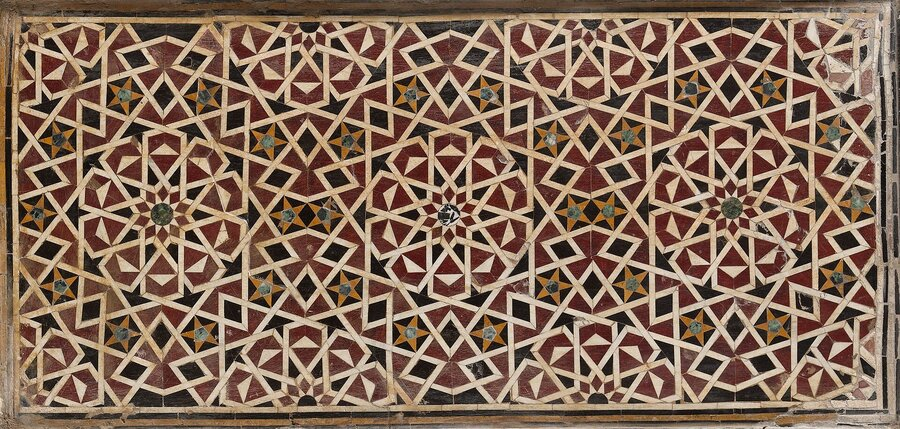
Tan-and-red interlaced strapwork panel, 8- and 10-fold stars. Over/under weave clearly readable.
Dado panel2.JPG
Public domain · unknown artisan, 15th century
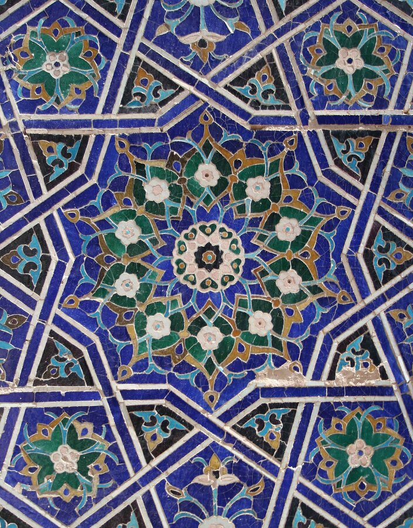
Cobalt, turquoise, cream and white ten-fold stars: the 'Isfahan' palette the issue names.
Samarkand Shah-i Zinda Tuman Aqa complex cropped2.jpg
CC BY 3.0 · User:Patrickringgenberg
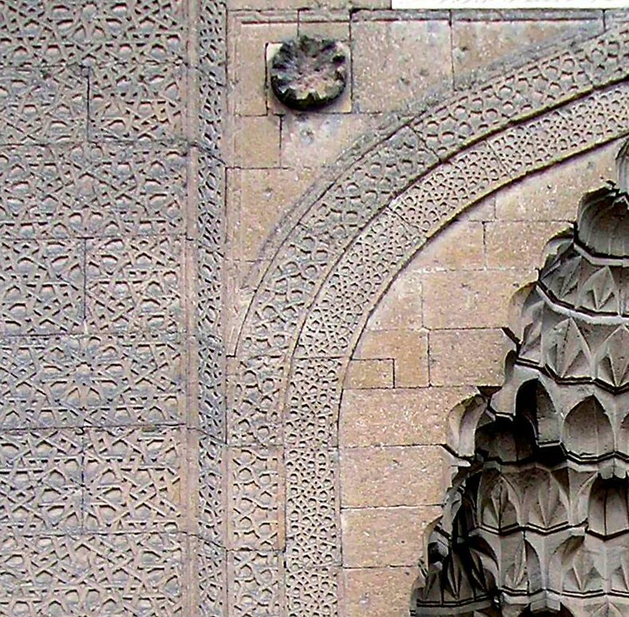
Carved in stone, no colour — the monochrome 'ink on paper' end.
Girih in stone at Kayseri Hunat Hatun.jpg
CC BY 2.0 · Verity Cridland
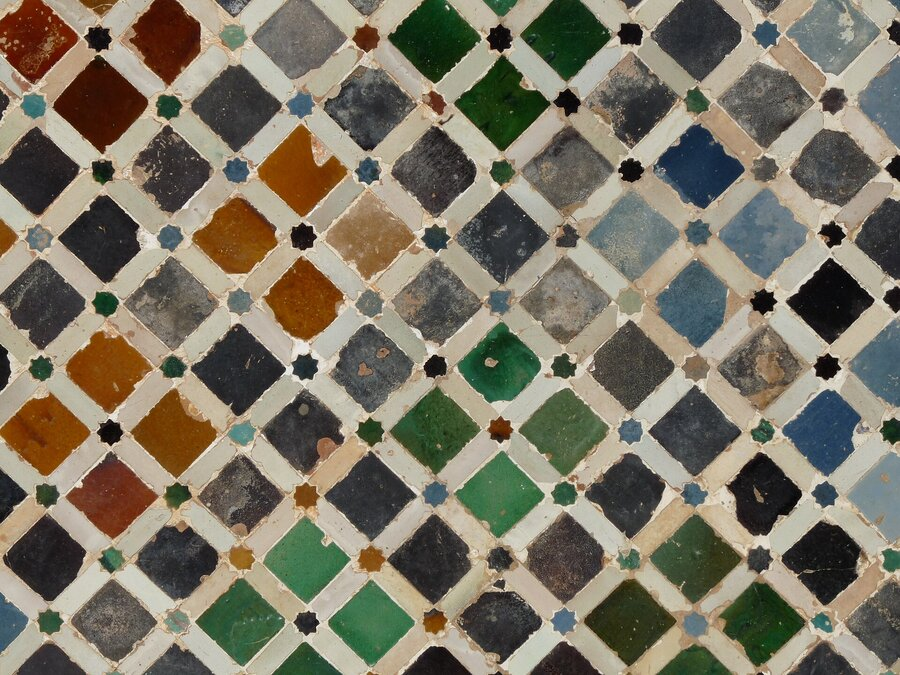
Zellij mosaic, NOT strapwork — included only as the 'Alhambra ochre' palette cue.
Alhambra wall 07 (7005708199).jpg
CC BY-SA 2.0 · michael clarke stuff